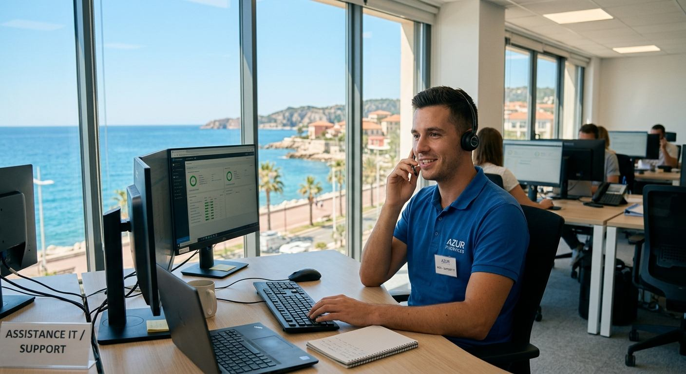
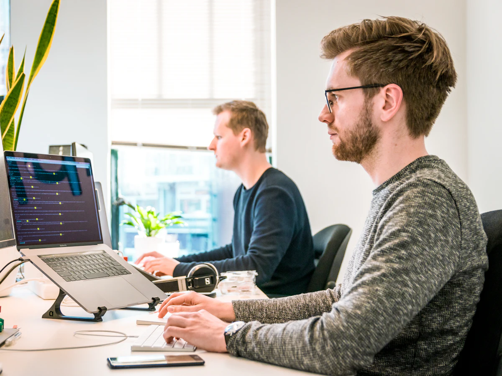
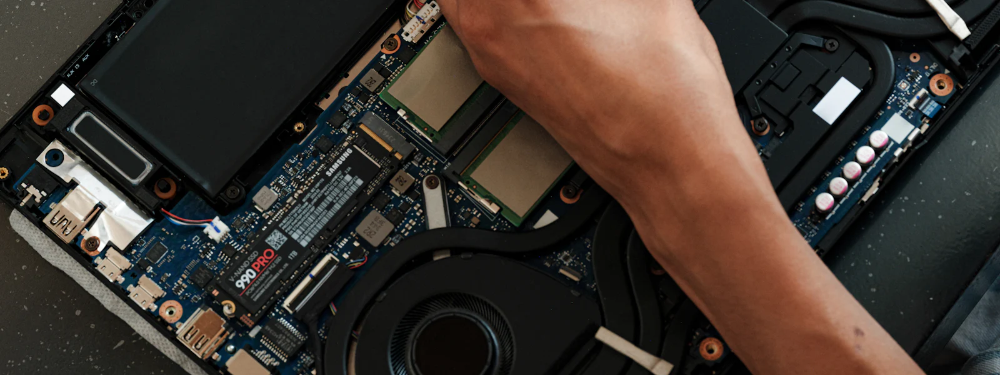
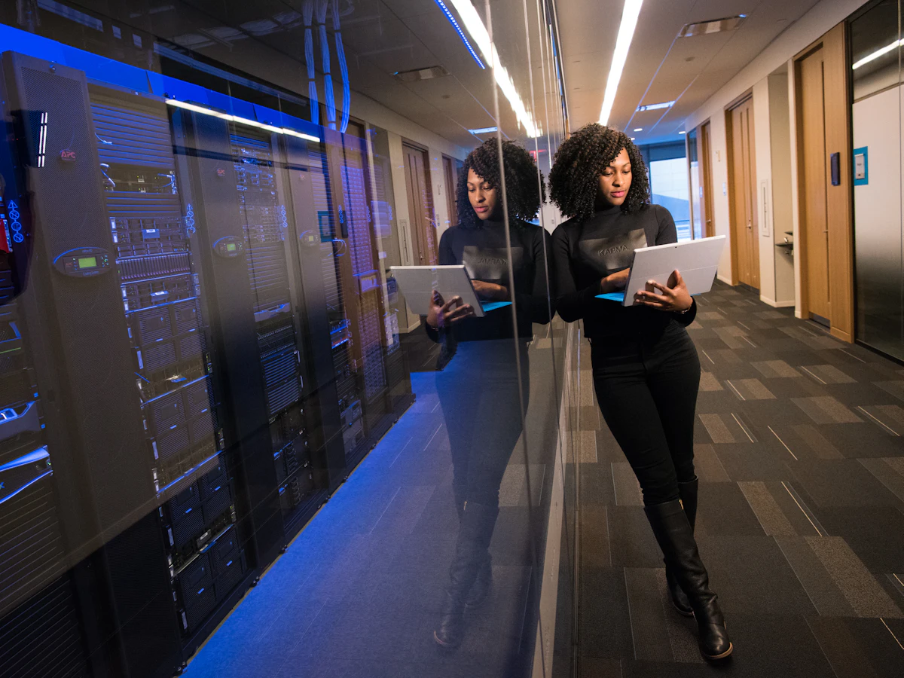

Dépannage et assistance informatique pour particuliers et PME sur la Côte d'Azur
Votre ordinateur rame ? On s'en occupe.
À la maison comme au bureau, Novazur IT intervient à distance ou sur place dans tout le 06. Choisissez votre profil :

- < 4hpour intervenir sur site
- 5 minpour une prise en main à distance
- 6j/7support joignable
- 25+communes desservies
Particuliers ou entreprises : une offre pour chacun
Que vous ayez besoin d'aide pour votre ordinateur personnel ou d'un service informatique externalisé pour votre entreprise, nous avons une formule pour vous.
Un informaticien patient, chez vous ou à distance
Nous remettons en route vos appareils et prenons le temps de vous expliquer simplement, sans jargon. Idéal aussi pour les seniors qui souhaitent gagner en autonomie.
- Dépannage PC et Mac, ordinateur lent
- Suppression de virus et aide face aux arnaques
- Installation box, Wi-Fi, imprimante, TV connectée
- Récupération de photos et sauvegardes

Votre service informatique externalisé
Commerces, cabinets, agences, start-ups : concentrez-vous sur votre métier, nous gérons votre informatique pour un forfait mensuel maîtrisé.
- Contrat de maintenance et infogérance
- Helpdesk pour vos salariés
- Microsoft 365, messagerie et sauvegardes
- Installation et programmation de téléphonie VoIP
- Délais d'intervention garantis
Tout ce qu'il faut pour que votre informatique fonctionne

Dépannage informatique
PC qui ne démarre plus, écran bleu, lenteurs, mises à jour bloquées : diagnostic et réparation rapides.
Assistance à distance
Connexion sécurisée à votre poste, avec votre accord, pour résoudre la plupart des problèmes sans déplacement.
Réseau & Wi-Fi
Installation de box, répéteurs, réseau maillé, VPN et câblage pour une connexion stable partout.
Sauvegarde & cloud
Sauvegardes automatiques, récupération de données, migration vers OneDrive ou Google Drive.
Microsoft 365 & messagerie
Messagerie professionnelle, Teams, partage de fichiers et gestion des licences.
Installation & conseil
Choix et configuration de nouveaux ordinateurs, transfert de vos données, imprimantes et périphériques.
Téléphonie VoIP pour les pros
Installation et programmation de votre standard IP : postes, accueil vocal, files d'attente, renvois et softphones. En savoir plus
Maintenance & infogérance
Supervision, mises à jour et gestion de votre parc : nous anticipons les pannes au lieu de les subir.

Protégez vos données avant qu'il ne soit trop tard
Rançongiciels, faux supports techniques, comptes piratés : les arnaques visent autant les particuliers que les petites entreprises. Nous mettons en place des protections simples et efficaces.
- Antivirus et pare-feu correctement configurés
- Sauvegardes automatiques testées régulièrement
- Double authentification sur vos comptes sensibles
- Sensibilisation au phishing pour vous et vos équipes

Devenez autonome avec vos outils numériques
Parce qu'un utilisateur formé, c'est moins de pannes et moins d'arnaques, nous proposons des formations concrètes, sur votre propre matériel.
- Particuliers & seniors : cours à domicile sur ordinateur, smartphone, tablette et démarches en ligne
- Entreprises : sensibilisation à la cybersécurité, Microsoft 365, Teams, Excel
- Programme adapté à votre niveau, mémo remis après chaque séance
Un problème résolu en 3 étapes
-
Vous nous contactez
Par téléphone ou via le formulaire. Nous qualifions votre besoin et vous annonçons le tarif avant toute intervention.
-
Nous intervenons
À distance immédiatement si possible, sinon sur rendez-vous chez vous ou dans vos locaux, partout dans les Alpes-Maritimes.
-
Vous êtes tranquille
Nous vérifions avec vous que tout fonctionne, vous donnons des conseils et restons joignables en cas de besoin.

Questions fréquentes
Intervenez-vous à domicile ?
Oui. Nous intervenons en moins de 4 heures à domicile chez les particuliers et dans les locaux des entreprises, dans tout le département des Alpes-Maritimes (Nice, Cannes, Antibes, Grasse, Menton…). Lorsque c'est possible, nous privilégions l'assistance à distance, plus rapide et moins coûteuse.
Comment fonctionne l'assistance informatique à distance ?
Vous téléchargez un petit logiciel sécurisé et nous communiquez un code de connexion. Nous voyons alors votre écran et réparons pendant que vous suivez l'opération. La session se ferme dès que nous avons terminé : nous ne pouvons pas nous reconnecter sans votre accord.
Combien coûte un dépannage informatique ?
Nos tarifs sont affichés sur la page Tarifs. Le prix vous est toujours annoncé avant l'intervention. Pour les entreprises, nous proposons des contrats de maintenance mensuels adaptés au nombre de postes.
Travaillez-vous sur Mac et sur PC ?
Oui, nous intervenons sur Windows, macOS, ainsi que sur smartphones et tablettes (iPhone, iPad, Android), imprimantes, box internet et équipements réseau.
Proposez-vous des contrats de maintenance pour les PME ?
Oui. Nos contrats incluent la supervision de vos postes, les mises à jour, la gestion des sauvegardes et un helpdesk pour vos salariés, avec des délais d'intervention garantis. Découvrir l'offre entreprises.

Un souci informatique ? Parlons-en maintenant.
Un technicien vous rappelle rapidement pour établir un diagnostic gratuit et vous proposer la meilleure solution.